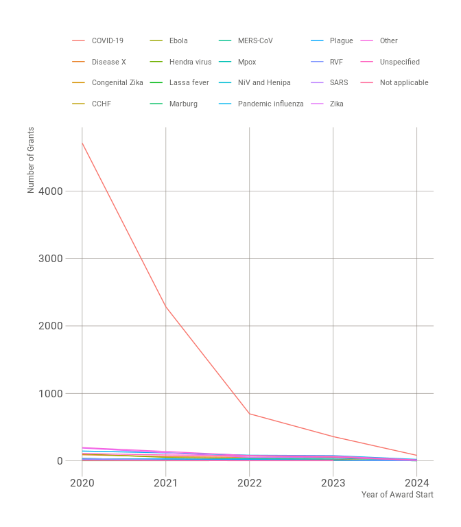

The Pandemic PACT monitors and analyses global funding and research evidence related to diseases with pandemic potential, as well as broader research preparedness efforts, and is equipped to pivot in response to outbreaks. It collects, curates, codes, and analyses data in alignment with WHO priority diseases and other selected illnesses, including pandemic influenza, mpox, and plague. Pandemic PACT aims to guide policy and decision-making for research funders, policymakers, researchers, multilateral agencies. The Pandemic PACT data is publicly available for download from its website and from Figshare. This package provides an application programming interface (API) to both the research programme’s Figshare repository and website data download facility to provide programmatic access to its publicly available tracker data along with it’s other data products.
What does {pactr} do?
pactr provides functions to interface programmatically with Pandemic PACT’s data products either through its Figshare repository or its website.
The functions for Figshare interface are wrappers to specific functions of the {deposits} package which provides the underlying universal interface to various online research data deposition services including Figshare. Current Figshare-specific functionalities available in pactr are:
Listing of outputs/assets available from the Panedmic PACT Figshare repository (experimental);
Downloading of outputs/assets available from the Pandemic PACT Figshare repository (experimental);
Reading of dataset outputs/assets available from the Pandemic PACT Figshare repository (experimental); and,
Processing of Pandemic PACT data (experimental).
The functions for interfacing with the data available from the Pandemic PACT website allow for downloading, reading, and processing. Current website data-specific functionalities available in pactr are:
Downloading of Pandemic PACT dataset available from the website (stable);
Reading of Pandemic PACT dataset available from the website (stable); and,
Processing of Pandemic PACT dataset available from the website (experimental).
Motivation
The main motiviation for the development of pactr is to create a standardised programmatic interface to Pandemic PACT’s data for those performing research or investigation relevant to Pandemic PACT’s objectives. Standardised programmatic interface, in turn, allow for reproducible scientific workflows based on the Pandemic PACT dataset.
Installation
pactr is not yet on CRAN but can be installed through the Oxford IHTM r-universe with:
install.packages(
"pactr",
repos = c("https://oxfordihtm.r-universe.dev", "https://cloud.r-project.org")
)Alternatively, pactr can be installed directly from GitHub using the remotes package with the following command:
if (!requireNamespace("remotes")) install.packages("remotes")
remotes::install_github("OxfordIHTM/pactr")pactr can then be loaded for use with:
Usage - Figshare workflow
Set a Figshare client
Usage of pactr always starts with the setting up of a Figshare client. This requires creating a Figshare account and then creating a personal access token here.
Once a Figshare token is created, it needs to be stored as a local environment variable. This can be done using the following command in R:
Sys.setenv("FIGSHARE_TOKEN"="YOUR_TOKEN_HERE")Once this token has been set as described above, the following command can be run to setup a Figshare client:
pact_client <- pact_client_set()Once a Figshare client has been setup, you can now perform the functionalities provided by the pactr package.
List outputs/assets
To list available outputs/assets from the Pandemic PACT Figshare repository, issue the following command:
pact_list(pact_client)The output is a data.frame containing metadata regarding contents of the Figshare Pandemic PACT group. The information within the metadata are those provided by Figshare’s application programming interface (API) and are either set by the Pandemic PACT data team or by Figshare. The data.frame would look as follows:
#> # A tibble: 7 × 18
#> project_id id title doi handle url published_date thumb defined_type
#> <int> <int> <chr> <chr> <chr> <chr> <chr> <chr> <int>
#> 1 NA 25827649 Scop… 10.2… "" http… 2024-05-15T12… "" 3
#> 2 NA 25368136 test 10.2… "" http… 2024-03-08T11… "htt… 1
#> 3 189177 25368070 Pand… 10.2… "" http… 2024-03-08T10… "htt… 1
#> 4 189177 25352839 Exte… 10.2… "" http… 2024-03-06T15… "" 6
#> 5 189168 24786258 Pand… 10.2… "" http… 2023-12-15T11… "" 3
#> 6 189168 24773787 Pand… 10.2… "" http… 2023-12-11T11… "" 3
#> 7 189168 24763548 Pand… 10.2… "" http… 2023-12-11T11… "" 3
#> # ℹ 9 more variables: defined_type_name <chr>, group_id <int>,
#> # url_private_api <chr>, url_public_api <chr>, url_private_html <chr>,
#> # url_public_html <chr>, timeline <df[,2]>, resource_title <chr>,
#> # resource_doi <chr>This function is useful in getting an overview of what is currently available in the Pandemic PACT Figshare repository.
Download outputs/assets
To download a specific output/asset - say the scoping review data - from the Pandemic PACT Figshare repository, issue the following commands:
## Get the unique identifier for the scoping review data from Figshare ----
file_id <- pact_list(pact_client) |>
subset(title == "Scoping Review Data", select = id) |>
unlist()
pact_download_figshare(id = file_id, path = ".")This will download the file Scoping_Review-Data.xlsx from the Pandemic PACT Figshare repository into the current working directory.
Read the Pandemic PACT tracker dataset and data dictionary
To read the Pandemic PACT tracker dataset into R, issue the following command:
pact_read_figshare(pact_client)which outputs a data.frame with 4637 records and 860 fields.
#> # A tibble: 4,637 × 860
#> PactID Grant.Number Grant.Title.Original Grant.Title.Eng
#> <chr> <chr> <chr> <chr>
#> 1 C00153 unknown Serological studies to quantify SARS-CoV… "Serological s…
#> 2 C00154 unknown African COVID-19 Preparedness (AFRICO19) "African COVID…
#> 3 C00155 unknown COVID-19 Intervention Modelling for East… "COVID-19 Inte…
#> 4 C00156 unknown The African coaLition for Epidemic Resea… "The African c…
#> 5 C00157 unknown Characterization of SARS-CoV-2 transmiss… "Characterizat…
#> 6 C00158 unknown Investigation of pre-existing immunity t… "Investigation…
#> 7 C00159 unknown A comprehensive study of immunopathogene… ""
#> 8 C00160 MC_PC_19012 Centre for Global Infectious Disease Ana… "Centre for Gl…
#> 9 C00161 MC_PC_19025 ISARIC - Coronavirus Clinical Characteri… "ISARIC - Coro…
#> 10 C00162 MC_PC_19026 MRC Centre for Virus Research (MRC CVR) … "MRC Centre fo…
#> # ℹ 4,627 more rows
#> # ℹ 856 more variables: Award.Amount.Converted <dbl>, Abstract.Eng <chr>,
#> # Laysummary <chr>, ODA.funding.used <chr>, Grant.Type <chr>,
#> # Grant.Start.Year <int>, Study.Subject..choice.Animals. <chr>,
#> # Study.Subject..choice.Bacteria. <chr>,
#> # Study.Subject..choice.Human.Populations. <chr>,
#> # Study.Subject..choice.Disease.Vectors. <chr>, …This function reads the labelled tracker dataset by default. If the raw dataset is required, then issue the following command:
pact_read_figshare(pact_client, tracker_type = "raw")which outputs a data.frame with 4638 records and 860 fields.
#> # A tibble: 4,638 × 860
#> pactid grant_number grant_title_original grant_title_eng
#> <chr> <chr> <chr> <chr>
#> 1 SDS001 unknown Dummy record "Dummy record"
#> 2 C00153 unknown Serological studies to quantify SARS-CoV… "Serological s…
#> 3 C00154 unknown African COVID-19 Preparedness (AFRICO19) "African COVID…
#> 4 C00155 unknown COVID-19 Intervention Modelling for East… "COVID-19 Inte…
#> 5 C00156 unknown The African coaLition for Epidemic Resea… "The African c…
#> 6 C00157 unknown Characterization of SARS-CoV-2 transmiss… "Characterizat…
#> 7 C00158 unknown Investigation of pre-existing immunity t… "Investigation…
#> 8 C00159 unknown A comprehensive study of immunopathogene… ""
#> 9 C00160 MC_PC_19012 Centre for Global Infectious Disease Ana… "Centre for Gl…
#> 10 C00161 MC_PC_19025 ISARIC - Coronavirus Clinical Characteri… "ISARIC - Coro…
#> # ℹ 4,628 more rows
#> # ℹ 856 more variables: award_amount_converted <dbl>, abstract <chr>,
#> # laysummary <chr>, oda_funding_used <int>, grant_type <int>,
#> # grant_start_year <int>, study_subject___1 <int>, study_subject___2 <int>,
#> # study_subject___3 <int>, study_subject___4 <int>, study_subject___5 <int>,
#> # study_subject___6 <int>, study_subject____88 <int>,
#> # study_subject____99 <int>, study_subject____9999 <int>, …Process the Pandemic PACT tracker dataset
pact_read_figshare(pact_client) |>
pact_process_figshare() |>
tibble::tibble()
#> # A tibble: 4,637 × 37
#> PactID Grant.Number Grant.Title.Original Grant.Title.Eng
#> <chr> <chr> <chr> <chr>
#> 1 C00153 unknown Serological studies to quantify SARS-CoV… "Serological s…
#> 2 C00154 unknown African COVID-19 Preparedness (AFRICO19) "African COVID…
#> 3 C00155 unknown COVID-19 Intervention Modelling for East… "COVID-19 Inte…
#> 4 C00156 unknown The African coaLition for Epidemic Resea… "The African c…
#> 5 C00157 unknown Characterization of SARS-CoV-2 transmiss… "Characterizat…
#> 6 C00158 unknown Investigation of pre-existing immunity t… "Investigation…
#> 7 C00159 unknown A comprehensive study of immunopathogene… ""
#> 8 C00160 MC_PC_19012 Centre for Global Infectious Disease Ana… "Centre for Gl…
#> 9 C00161 MC_PC_19025 ISARIC - Coronavirus Clinical Characteri… "ISARIC - Coro…
#> 10 C00162 MC_PC_19026 MRC Centre for Virus Research (MRC CVR) … "MRC Centre fo…
#> # ℹ 4,627 more rows
#> # ℹ 33 more variables: Award.Amount.Converted <dbl>, Abstract.Eng <chr>,
#> # Laysummary <chr>, ODA.funding.used <chr>, Grant.Type <chr>,
#> # Grant.Start.Year <int>, Study.Subject <list>, Ethnicity <list>,
#> # Age.Groups <list>, Rurality <list>, Vulnerable.Population <list>,
#> # Occupational.Groups <list>, Study.Type <list>, Clinical.Trial <list>,
#> # report <chr>, Pathogen <list>, Pathogen.Specific <list>, Disease <list>, …For a more detailed discussion of the usage and limitations of the pactr Figshare functions, see this vignette.
Usage - website data workflow
Download the Pandemic PACT tracker dataset from the website
To download the Pandemic PACT traker dataset available from its website, the following command can be used:
## Save the dataset from website to a temporary directory ----
pact_download_website(path = tempdir())which will return the path to the downloaded dataset:
Read the Pandemic PACT tracker dataset from the website
Instead of downloading, the Pandemic PACT dataset available from its website can be read into R directly as follows:
which results in the following:
Process the Pandemic PACT tracker dataset from the website
The package includes functions that will process the Pandemic PACT tracker dataset into specific structures and aggregations that will allow for further plotting and reporting of similar outputs that are currently presented in the Pandemic PACT website.
For example, the following will process the Pandemic PACT tracker dataset into an aggregated dataset structure that can be used to create a similar plot to the one presented in the website.
pact_read_website() |>
pact_process_website_topic_group(topic = "Disease", group = "GrantStartYear")which produces the following output:
#> # A tibble: 171 × 3
#> GrantStartYear Disease n
#> <int> <chr> <int>
#> 1 1978 Pandemic-prone influenza 1
#> 2 1978 Severe Acute Respiratory Syndrome (SARS) 1
#> 3 1981 COVID-19 1
#> 4 1982 COVID-19 1
#> 5 1988 COVID-19 1
#> 6 1992 COVID-19 6
#> 7 1994 COVID-19 2
#> 8 1996 COVID-19 1
#> 9 1997 COVID-19 28
#> 10 1997 Zika virus disease 1
#> # ℹ 161 more rowswhich in turn can be plotted as follows:

Citation
To cite the pactr package, please use the suggested citation provided by a call to the citation() function as follows:
citation("pactr")
#> To cite pactr in publications use:
#>
#> Ernest Guevarra (2024). _pactr: An Interface to the Pandemic PACT
#> Repository_. R package version 0.0.9000,
#> <https://oxford-ihtm.io/pactr/>.
#>
#> A BibTeX entry for LaTeX users is
#>
#> @Manual{,
#> title = {pactr: An Interface to the Pandemic PACT Repository},
#> author = {{Ernest Guevarra}},
#> year = {2024},
#> note = {R package version 0.0.9000},
#> url = {https://oxford-ihtm.io/pactr/},
#> }To cite the Pandemic PACT Tracker dataset, please use the suggested citation provided by a call to the pact_cite() function as follows:
## cite the labelled version of the tracker dataset
pact_cite(pact_client, id = 24763548)
#> To cite Pandemic PACT Grant Tracker (labelled) in publications use:
#>
#> Pandemic PACT team (2023). "Pandemic PACT Grant Tracker (labelled).
#> dataset version 1." doi:10.25446/oxford.24763548.v1
#> <https://doi.org/10.25446/oxford.24763548.v1>.
#>
#> A BibTeX entry for LaTeX users is
#>
#> @Misc{,
#> title = {Pandemic PACT Grant Tracker (labelled). dataset version 1},
#> author = {{Pandemic PACT team}},
#> year = {2023},
#> doi = {10.25446/oxford.24763548.v1},
#> }Community guidelines
Feedback, bug reports and feature requests are welcome; file issues or seek support here. If you would like to contribute to the package, please see our contributing guidelines.
This project is released with a Contributor Code of Conduct. By participating in this project you agree to abide by its terms.